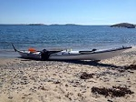

Campingplatsen ligger vid Nickstabadet, Nynäshamns populära havsbad med stor fin sandstrand.
Här finns 130 campingtomter för husvagnar, husbilar och tält, samt 28 stugor för dig som kommer utan eget boende men ändå vill njuta av anläggningens service och utbud.
Plaska, åk vattenrutschkana, hyr kanot

Kanot uthyrning
Vid stranden finns brygga med hopptorn, lång vattenrutschbana och du kan hyra kanot och kajak. Minigolf, kiosk, grill och glassbar finns också här, samt restaurang med rättigheter. Trubadurkvällar anordnas också.
Härifrån är det 700 meter till pendeltågstation (hpl Nynäsgård) med 55 minuters restid till Stockholms centralstation. Ca 10 min promenad till Nynäshamns centrum för shopping och många restauranger och för båtar till Gotland, Lettland, Polen och omkringliggande skärgård. Sommartid finns gott om intressanta utflyktsmöjligheter i omgivningarna.